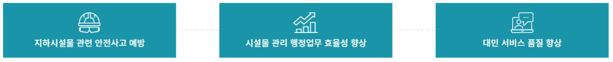

안녕하세요!
공간정보산업 경력 6년,
공간정보엔지니어
신명호 입니다!
#GISDB구축 #정밀도로지도구축 #POI구축 #수치지도제작 #지하시설물 #국가기준점설치&이전
#GNSS #RTK멀티콥터드론 #MMS #지거 #지하시설물탐사기 #토털스테이션
#Python #SQL #HTML #QGIS #AutoCAD #Pix4D #SketchUP #2D #3D #Photoshop #Office
About Me

저는 공간정보 6년차로써 측량과 관련된 국가사업, 공공기관, 민간 사업을 두루 경험해 보았습니다. 다양한 측량 및 GIS DB구축 용역의 착수부터 준공까지하며, 시스템 유지보수까지. 이러한 경험들을 바탕으로 자동화 기술과 노하우를 보여 드리겠습니다.
자격증
노력과, 성실함
저를 나타내는것은 꾸준함입니다.
어떠한 환경속에서도 배움의 자세를 잊지 않습니다.

측량 및
지형공간정보
기사
지형공간정보
기사
측량 및
지형공간정보
산업기사
지형공간정보
산업기사

측량기능사
전산응용토목제도기능사
지도제작기능사

건설재료시험기능사
×

사업 소개
기대 효과

- 경제적 절감
- 안전한 도시 환경
- 데이터 통합
공간정보 시장은 다양합니다
GIS DB구축용역, 정밀도로지도구축, 수치지형도제작, 지적재조사, 3D모델링, 디지털트윈 등등...
맨 첫단추는, 지하시설물 DB 구축 용역입니다.
그 이유는,1. 사업시작이 쉽습니다
2. A~Z까지 경험해보며 자동화와 노하우기술이 축적되었습니다
3. 관로의 노후화교체, 신규관로매설, 보수, 도로공사 등은 꾸준히 있습니다.
4. 작은 단위로 사업이 나오기 좋습니다.
5. 청년창업지원과, 중소벤처기업지원, 지방소도시기업지원, 연구용역지원, 데이터베이스 및 공간정보사업 장려지원 따라서 사업 초기에 사업규모를 키우기 쉽습니다!